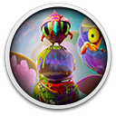

 Journey to the Savage Planet
Details
 |
|
| Playtime | Not Played |
| Last Activity | Never |
| Added | 12/1/2021 20:37:58 |
| Modified | 12/2/2021 13:57:54 |
| Completion Status | Not Played |
| Library | Gog |
| Source | GOG |
| Platform | PC (Windows) |
| Release Date | 1/28/2020 |
| Community Score | 78 |
| Critic Score | 80 |
| User Score | |
| Genre | Action Adventure |
| Developer | Typhoon Studios |
| Publisher | 505 Games |
| Feature | Co-Operative Single Player |
| Links | Store |
| Tag | |
Description
Onward to Adventure

WELCOME TO THE PIONEER PROGRAM! As the newest recruit of Kindred Aerospace - The 4th best interstellar space exploration company - Your job is to determine if the planet ARY-26 planet is fit for humans. You may be short on equipment and experience, but good luck!
Play with a friend
Play solo or online with a friend. If you have one.
Explore and catalog the flora and fauna.
From strange spherical birds to hallucinogenic plants to ‘festering alien orifices.’ Try not to die.
No Expense Spared*
You get some cool tools for free, like a laser pistol, rocket booster pack, and ‘probe’, but if you need something you have a slick 3D printer can turn space trash into sweet items.
Are you alone?
Bonus mysteries! Complete your survey of the planet to find out. You’ll know you’re on the road to completion when you’ve heard the words ‘cucumber sh*twater’ and found the ‘festering butthole’.
*Most Expenses Spared.